Voltar ao topo

nova busca
-
buscas salvas
-
gerenciar corpora
Expressão de busca:
Buscas simples com expressão regular podem ser realizadas digitando as palavras na barra de busca. Para buscas complexas, é necessário digitar o critério de busca e seus parâmetros, conforme instruções no quadro à direita.
x
[
Voltar à busca normal
]
Baixe o
modelo de script de busca
em Python.
Edite-o de modo a encontrar as frases pretendidas.
Submeta o script de busca navegando até o arquivo editado ou arraste-o até o botão abaixo.
Lembre-se de renomear o script de modo que especifique o que está sendo buscado.
Script de busca:
Corpus:
Busca rápida
A busca não será salva no sistema, mas você poderá salvá-la posteriormente caso julgue que teve bons resultados.
Salvar resultados da busca
A busca será salva no sistema, e você poderá acessá-la posteriormente na página de interrogações recentes.
Visualizar distribuição
Selecione para visualizar a distribuição das ocorrências que são resultado da sua expressão de busca entre as diferentes categorias de anotação.
Nome da busca
:
Visualizar distribuição de:
id
word
lemma
upos
xpos
feats
dephead
deprel
deps
misc
dependentes
Para habilitar a visualização da distribuição de alguma anotação, utilize o
critério 5: Python
ou o
construtor de expressões de busca
.